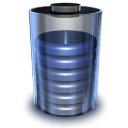

v0.70

Welcome to the PlaatStats documentation.
Introduction
PlaatStats is Windows Statistics tool
Links
Website: http://www.plaatsoft.nl
Code: http://code.google.com/p/plaatstats
Credits
Documentation: wplaat
WishList
ReleaseNotes
14-05-2010 Version 0.70
- Disable main window when sub window is opened.
- Improve new version check.
- Added donate window.
- Added Drupal Google Code downloads to statistics.
- Bugfix: Drupal ChurchAdmin module is now also counted.
- Build PlaatStats with QtCreator v1.3.1.
29-03-2010 Version 0.60
- Rename registry key names.
- Improve source code documentation.
- Improve about window (Add plaatsoft logo).
- Added settings window.
- Added support for http proxy.
- Added new version check.
- Build PlaatStats with QtCreator v1.3.1.
21-03-2010 Version 0.50
- Improve number layout (dot notation after 3 digits).
- Add Windows setup file.
- Add source code to Google Code
- Build PlaatStats with QtCreator v1.3.1.
18-03-2010 Version 0.40
- Change GUI layout.
- Added Drupal downloads.
- Added application icon.
- Refactor file names.
- Build with QtCreator v1.3.1
17-03-2010 Version 0.30
- First release for Homebrew Scene.
- Cleanup code.
- If internet is down show 0 values in boxes.
- Move clipboard functionality to Menu action.
- Build with QtCreator v1.3.1
16-03-2010 Version 0.20
- Added fix window size.
- Store window position in Windows registry.
- Improve GUI layout.
- Fetch data from Google Code sites.
- When application is started, information is directly fetched.
- Add windows clipboard support (HTML output is added)
- Build with QtCreator v1.3.1
14-03-2010 Version 0.10
- Start building.
- Created GUI.
- Added network call (Plaatsoft and CodeMii website)
- Added stateMachine.
- Build with QtCreator v1.3.1